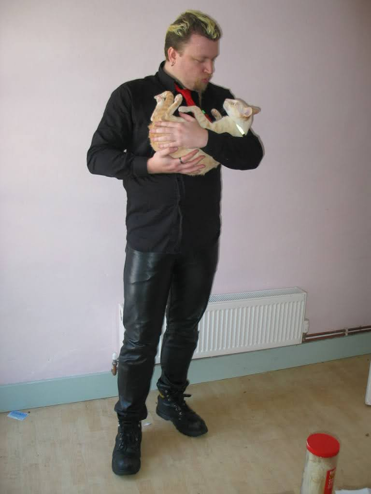

All day and every day, making tomorrow seem like yesterday. Now remember when we said there was no future? Well, this is it. Right! Next up, more of the same.
https://twitter.com/Horsenburger/status/1563823213808852994 @Horsenburger Is there any input device you could use that's less painful?
I keep thinking that I should try and work out some bizarre input devices to swanky paint since I have control over everything and its all a design question.
But its hard to do because it is a design problem :)
https://twitter.com/johnleach/status/1561855783528284162 @johnleach @shi Of course, this is our 4bit anniversary, another 16 years till the 5bit one.
@charlottegore @shi :) Thank you.
https://twitter.com/wetgenes/status/1561848276101513221 @shi and here is me explaining the new situation to the cat 
Woohoo 16 years of marriage to @shi :) Here is a wedding day picture in front of a fountain beside a very busy road in sunny Croyden 16 years ago today.
https://twitter.com/wetgenes/status/1561490729855221760 When the children cried, or made wry faces at the black stuff, their daddy only laughed, and said it was healthy, or was for good luck.
-- that book of fairy tales sure has a lot to say about chimneys.
https://twitter.com/wetgenes/status/1561490582610087938 The only tapestry in the hut was in the shape of long festoons of soot, that hung from the roof or rafters. These, when the wind blew, or the fire was lively, would swing or dance or whirl, and often fall on the heads, or into the food, while the folks were eating.
https://twitter.com/wetgenes/status/1561488659194564614 Now, as we have said, this was about the time that chimneys came into fashion. In very old days, the Cymric house was a round hut, with a thatched roof, without glass windows, and the smoke got out through the door and holes in the walls, in the best way it could.
https://twitter.com/wetgenes/status/1561488657508450307 Then, it took plenty of time to pass through the doors and wind holes, for no one person or thing was in a hurry, when they were young. Moreover, when the fireplace was in the middle of the floor, the whole family sat around it and had a sociable time.
People hate all new technologies. (in the same way)
Even chimneys?
Especially Chimneys!
When chimneys were first added to houses in Wales, and the style of house-building changed, from round to square, many old people found fault with the new fashion of letting the smoke out.
Nope is good, have seen it twice :)
Feels like Tremors to me in a lot of ways.
Which also means I'm really looking forward to the six straight to video sequels staring only new Burt who must have survived somehow and turns up each time with bigger and badder cameras.
Narrative is the path to the dark cycle. Narrative leads to Quick Time Events. Quick Time Events lead to hate. Hate leads to Narrative.
https://twitter.com/IcepickInTheory/status/1557340321285013505 @IcepickInTheory I played a steam demo of that a while back but I don't think I got as far as any actual dams. Just remember city building but with beavers. :)
I wonder if you could do a "Bridge Builder" style physics game but with dams and a decent water simulator.
So the water slowly builds up and then CRACK WHOOSH you fluffed it.
Everyone loves seeing a dam burst and it can be a 2D building slice interface for a 3D simulation. https://twitter.com/gutenberg_new/status/1557144778214494208
Everybody enjoys fun. Our new prize collection consists of a false moustache, comic songs, funny pictures, photos of pretty girls, money making secrets, guide to dreams, etc. We will send the prize collection, postpaid, on receipt of only six 1 cent stamps https://twitter.com/gutenberg_new/status/1556737101294489600
Just because you can't hire David Bowie as an actor does not mean that you can't hire Weird Al to perform a parody cover of Starman for the shows theme tune.
Pure laziness and a total insult to the fans.
https://twitter.com/davidcapello/status/1555286998440706048 @davidcapello @beast_pixels @aseprite I know there is always the fear of committing internal formats to disk but I think its reasonable to cease support of old undos if you need to.
IE allow breaking changes to bump the version and the undo will stop loading.
When it works, yay, when it doesn't, meh, no big deal.
https://twitter.com/mrdoob/status/1555680569597775872 @mrdoob That reminds me, I'm sure there is some sort of X-COPY interface based idle game just waiting to be made.
Re-live the thrills of copying disks with authentic drive head scrunching noises :)